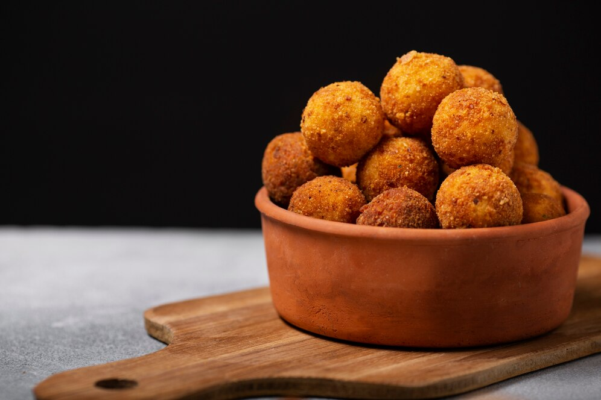

Ingredientes:
-300g de queijo mussarela ralado
-200g de queijo parmesão ralado
-1/2 xícara de leite
-1/4 xícara de farinha de trigo
-1 ovo
-Farinha de rosca para empanar
-Óleo para fritar
-Sal e pimenta-do-reino a gosto
Modo de Preparo:
-Preparar a Mistura
Em uma tigela, misture o queijo mussarela, o queijo parmesão e a farinha de trigo.
Adicione o leite aos poucos, misturando até formar uma massa firme.
Tempere com sal e pimenta-do-reino a gosto.
-Modelar as Bolinhas
Com as mãos, modele pequenas bolinhas com a massa de queijo.
Em um prato separado, bata o ovo e passe as bolinhas primeiro no ovo batido e depois na farinha de rosca, cobrindo bem todas as superfícies.
-Fritar as Bolinhas
Aqueça o óleo em uma panela funda ou frigideira e frite as bolinhas de queijo até ficarem douradas e crocantes.
Retire-as da frigideira e coloque sobre papel toalha para absorver o excesso de óleo.
-Servir
Sirva as bolinhas de queijo ainda quentes, como aperitivo ou acompanhamento!
-Dica
Se preferir, pode rechear as bolinhas com um pouco de presunto ou outros queijos de sua preferência para deixar ainda mais saborosas!